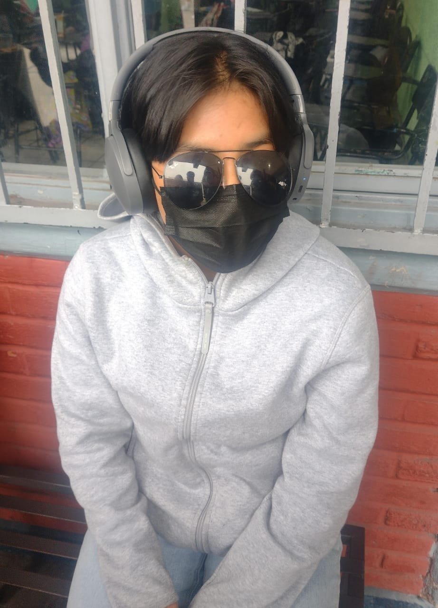

PROBLEMÁTICA DE LA POLINIZACIÓN EN MÉXICO
¿Qué es la polinización?
La polinización puede definirse como la transferencia de polen entre partes masculinas y femeninas de las flores para posibilitar
la fertilización y la reproducción vegetal (IPBES, 2016). La mayoría de las plantas cultivadas y silvestres dependen de vectores
animales, conocidos como polinizadores, para transferir el polen, pero existen otros medios importantes de transferencia de polen, como la autopolinización
(fertilización con polen de la misma planta) o la polinización eólica (mediada por el viento).
Polinización es entonces el principal mecanismo para la
reproducción sexual de las plantas con flores y por tanto de la producción de frutos y semillas. Se estima que más de 300,000 especies de plantas con flores en el mundo (87.5 %) son polinizadas por animales (Ollerton et al., 2011;
Rosas etc).
La polinización animal: es un servicio ambiental esencial en todos los
ecosistemas terrestres naturales y agrícolas, que es realizado por diversos
grupos de insectos como abejas, mariposas, moscas, polillas, avispas, escarabajos, hormigas, y vertebrados como colibríes, murciélagos y algunos reptiles
(Mayer et al., 2011; de Miranda, 2017).
Las abejas son el grupo más abundante
y diverso de polinizadores en el planeta, de las que existen más de 20,000
especies (Michener, 2007). El segundo lugar lo ocupan las moscas, aunque no
todas las especies son polinizadores eficientes y existen grandes vacíos en el
conocimiento de su función en el proceso de polinización (Klein et al., 2007;
Michener, 2007; Larson et al., 2001).
En el tercer lugar se encuentran mariposas y polillas como polinizadores en todo el mundo, pero son más abundantes
y diversas en los trópicos, mientras que aves y murciélagos polinizadores se
encuentran principalmente en bosques tropicales, y los últimos también en
zonas desérticas. En ambientes insulares, reptiles como lagartijas y geckos
realizan la función de polinización donde insectos y mamíferos no son abundantes (de Miranda, 2017)


Conclusión
Este proceo a pasado por miles de años el cual no habia sido alterado, mas sin en cambio el ser humano se a encargado de acabar con este proceso sumamente importante para las plantas y por ende a los humanos los cuales defendemos de este delicado proceso que trae multiples beneficios como la producción de oxigeno le regeneración y sustentación de los ecosistemas. Este proceso es afectado principalmente por las empresas aunque los civiles tambien son responsables porque también crean mucha basura o residuos. Es necesario consientizar a todo y empezar a actuar lo mas rápido posible para salvar vidas.
material de apoyo
Créditos
- Jaziel Ali Bautista Olvera
- Aramiz Marlene Romero González 